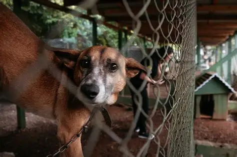
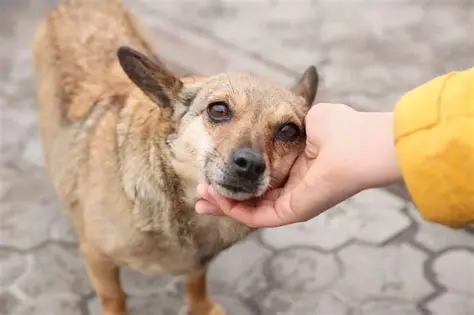

Saimon
6 MESSES
PORTE MEDIO
MACHO
Um caramelo um pouco timido, mas muito
Bonzinho, docil e extremamente carinhoso

Pretinha
12 MESSES
PEQUENA
FEMEA
Uma cadela extrovertida, mas muito
calma, docil e companheira

Teodoro
2 ANOS
PORTE MEDIO
MACHO
Um caramelo muito timido no momento, mas um
pouco bravo ,pois foi muito maltratado na rua